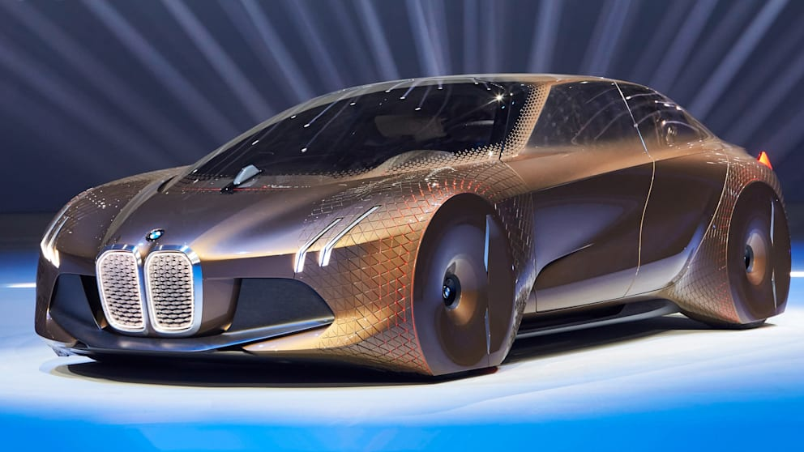

| Company name | Bayerische Motoren Werke Aktiengesellschaft |
|---|---|
| Founder | Gustav otto, Camillo Castiglioni, Franz Josef Popp, Karl Rapp |
| Founded on | 7 March 1916 |
| Headquarters | Munich, Germany |
| Parent organization | BMW Group |
| Chairman | Norbert Reithofer |
| CEO | Harald Krüger |
| No.of production plants | 31 |
| Customer service | 1800 102 2269 |
Bayerische Motoren Werke AG, translated in English as Bavarian Motor Works, commonly referred to as BMW is a German multinational company which produces luxury vehicles and motorcycles. The company was founded in 1916 as a manufacturer of aircraft engines, which it produced from 1917 until 1918 and again from 1933 to 1945.

BMW was established as a business entity following a restructuring of the Rapp Motorenwerke aircraft manufacturing firm in 1917. After the end of World War I in 1918, BMW was forced to cease aircraft-engine production by the terms of the Versailles Armistice Treaty. The company consequently shifted to motorcycle production in 1923, once the restrictions of the treaty started to be lifted, followed by automobiles in 1928–29.
The first car which BMW successfully produced and the car which launched BMW on the road to automobile production was the Dixi, it was based on the Austin 7 and licensed from the Austin Motor Company in Birmingham, England.
